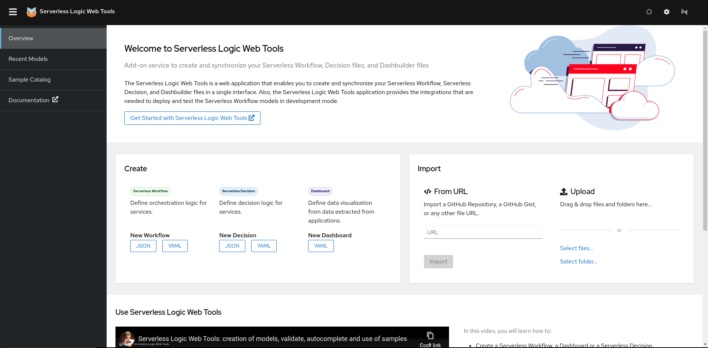
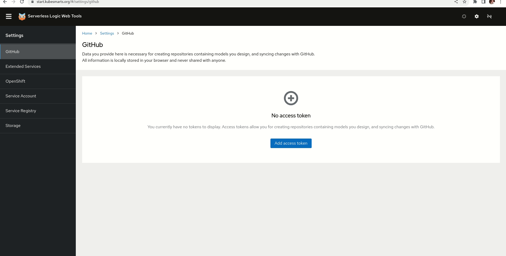
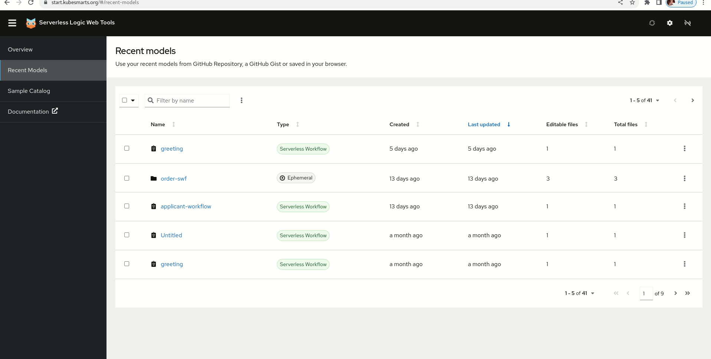
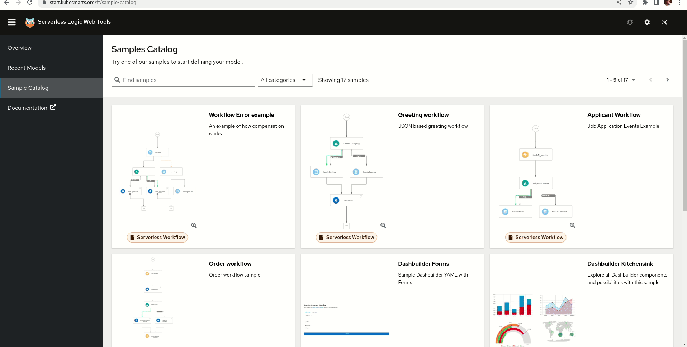

Introducing the new Serverless Logic Web Tools UI
We are thrilled to announce the release of a major update for Serverless Logic Web Tools. With this update, we have revamped the user interface (UI) and introduced several new functionalities that enhance the overall user experience. To redesign the UI, we relied on the Patternfly React Components from https://www.patternfly.org, ensuring responsive support.
Installation
The new Serverless Logic Web Tools is live here to let you try the new functionalities.
The new redesigned Serverless Logic Web Tools
Now let’s go through the latest changes:
- New Sidebar navigation between sections of the application, improving overall usability.
- We have divided the home page into three distinct sections: Overview, Recent Models, and Samples Showcase, providing a clear separation of functionalities and making it easier for users to find the information.
- Enhanced Error Page: If a problem occurs with a model or if a model or a workspace is not found, you will now be presented with a visually appealing error message with a detail of what went wrong.

New Settings Section:
- Redesigned Settings Pages: We have replaced the settings modal with the new Settings section. This change provides a more intuitive interface for users to configure their environment.
- Quickstart Guide: Configuring your Serverless ecosystem requires some knowledge and can be difficult at first impact. We implemented an on-page “quickstart guide” that assists users to set up their environment and get started with Web Tools.
- New Storage Page: Here, you can completely erase all stored data in your browser, including workspaces, models, and settings. The page provides options to clear IndexedDB, LocalStorage, and Cookies, allowing you to reset specific aspects of the application. Please note that this feature is currently compatible only with Google Chrome.
- Now that all the features reached the stable version, we removed the Feature Preview setting.

New Recent Models and Workspace Files Pages:
- Data Table: The new Recent Models and Workspace Files pages now display data in a tabular format, presenting detailed information about each element in rows. Users can take advantage of various functionalities, including sorting columns, filtering elements by name, using pagination to navigate between pages and choosing the number of elements per page.
- Actions Menu: We have added an actions menu for each row in the table. You can delete elements after confirming the action in a specific modal and download elements (workspaces as ZIP files and models as individual files).
- Bulk Actions Menu: After selecting the elements or using the select all checkbox, you can execute a bulk delete action always after confirming your action in a modal dialog.
- Workspace Files: The Workspace Files section lists files contained within a workspace. Furthermore, users can create new files using the “New File” menu available on the Editor page.
- Real-time Updates: Whenever an element is deleted, renamed, or created in a different browser window, the Recent Models and Workspace Files pages will be updated in real-time, ensuring consistency of the data.

New Samples Page:
- Imported Samples from KIE Samples Repository: Now the samples are automatically fetched from the KIE Samples repository. This integration offers users a wider collection of updated samples that can serve as inspiration or starting points for their new projects.
- Improved Grid view: The Samples page now features pagination, with a grid of nine samples displayed per page, allowing for easier navigation, searching for samples by name and filtering by category.
- Sample Image Preview: To provide a closer look at each sample, we have added a magnifying glass button over the sample image to view a larger version of the SVG image.

Conclusion
We have many more exciting improvements coming in the future.
The redesigned UI and new functionalities in Serverless Logic Web Tools aim to enhance your workflow creation and management experience. With a more clear separation of sections, improved data presentation, and a wide range of samples, we believe that this update will empower you to create Serverless Workflows and Dashboards.
Please join us on our Zulip channel and share your thoughts. We appreciate every single comment and are eager to listen to your feedback.